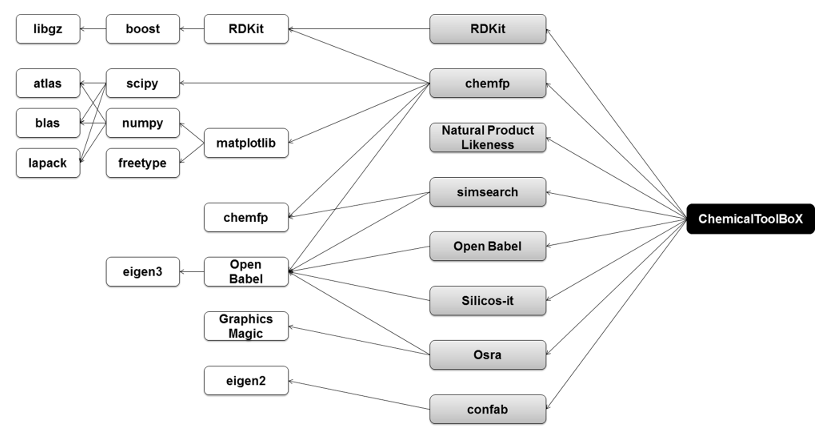

"... is a comprehensive collection of small compounds, consisting of data from other repositories.
The focus of ChemicalBoX is to offer a ready- and easy-to-use compound library that extends current freely available compilations."
reproducibility/transparency
completeness
free availability
automatization
39 million filtered unique compounds
PurchasableBoX
"... is a comprehensive collection of small compounds, consisting of data from various vendors."
44,6 million filtered unique compounds
43,6 million drug like compounds (QED > 0.2)
1,2 million cluster centers (similarity > 0.85)
QED: G. Richard Bickerton et al. "Quantifying the chemical beauty of drugs"; Nature Chemistry 2012
Merging ChemicalBoX and PurchasableBoX offers a compilation
of ~70 million of unique filtered compounds.
Merging ChemicalBoX and PurchasableBoX offers a compilation
of ~70 million of unique filtered compounds.
CAS, Chemical Abstracts Service: "65 Million: It's more than just a number."
Deployment - one click*!

* If you have a running Galaxy instance
What is missing?
What is missing?
RNA Tools ! (aka our tools)
RNA tools
ViennaRNA package
LocARNA
EDeN
rRNA
RNAz
Infernal
blockclust
graphclust
ExpaRNA
aragorn
tRNAscan
(mcl)
(blockbuster)
(segemehl)
de.NBI
Deutsches Netzwerk für Bioinformatik-Infrastruktur
BMBF founded
RNA Bioinformatic Center (RBC)
Rolf Backofen (FR), Peter Stadler (L), Uwe Ohler (B) and Nikolaus Rajewsky (B)